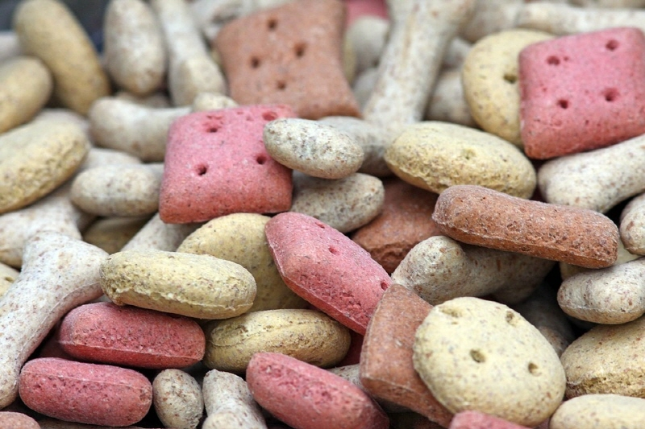

반려견의 행복추구권! 삶의 질을 높이는 방법
반려동물을 가족으로 맞이하는 인구가 늘어나면서 반려동물과 관련된 용품 사업도 많이 늘어나고 있습니다. 그래서 많은 반려인이 반려견의 삶의 질을 높이기 위해 여러 가지 용품을 사면서 사람처럼 먹이고, 꾸미는 등의 돈을 들이고 있는데요. 반려견의 겉모습을 꾸미고, 안락한 생활 공간을 제공하고 있는 것 만큼 반려견의 내적인 부분까지도 생각할 필요가 있어요. 외적인 것이 아닌 내적으로 우리 집 소중한 가족이 행복함을 느낄 수 있도록 만드는 길! 반려견의 삶의 질을 높이는 방법에 대해 알아볼게요.
"건강함을 챙기는 일, 1년에 한 번 건강검진"
사람은 몸이 아프면 아프다고 바로 말할 수 있지만, 반려동물은 그렇지 않죠. 질병이 상당 부분 진행된 뒤에야 알게 되는 경우가 많아요. 게다가 사람처럼 노화에 따른 질병, 불편함도 점점 늘어나기 때문에 1년에 한 번 또는 6개월에 한 번씩 건강검진을 받으면서 건강 상태에 대한 조언을 구하는 것이 좋습니다. 조기에 발견하면 비교적 간단하게 치료될 수 있는 질병도 있어 반려동물의 장수를 위해 미리미리 검진받는 습관, 반려견의 삶의 질이 달라질 수 있습니다.
"건강한 식단 관리"
아무리 사람 몸에 좋은 음식이라도 반려동물에게도 똑같이 좋다고 할 순 없습니다. 반려동물의 특성에 맞는 음식을 적정량으로 급여하는 것은 반려동물이 건강한 체중과 몸 상태를 유지하는 데 도움이 됩니다. 사랑하는 마음이 크다고 해서 지나친 영양 공급으로 영양 과잉이 되는 상황도 좋지 않으니, 반려견 식단에 대해 도무지 감이 잡히지 않는다면 수의사의 도움으로 건강한 식단을 구성해 보세요.
"산책은 매일 매일"
온종일 집안에만 갇혀 있다면 반려견의 삶이 크게 떨어질 수 있어요. 규칙적인 산책은 반려견의 따분한 일상을 벗어날 수 있는 탈출구이자 비만을 관리하는 방법이 되기도 합니다. 바쁜 시간이라도 조금씩 매일 매일 산책하러 나가는 것으로 반려견의 행동 교정은 물론 스트레스를 해소도 가능합니다.
"사랑으로 대하기"
반려견을 사랑으로 대한다면 서로가 꼭 말로 대화하지 않더라도 서로를 얼마나 사랑하는지를 느낄 수 있습니다. 반려견도 그것을 내적으로 느끼고 반려견의 삶의 질 자체가 높아지는 것은 물론 행복감을 크게 느낄 수 있습니다. 내가 키우는 '동물'이 아닌 가족의 구성으로 생각한다면, 지금보다 훨씬 더 반려견의 삶의 질은 높아질 수 있습니다.
아무리 좋은 옷, 간식, 식단을 갖추어 주더라도 반려인과 서로 사랑스러운 교감이 없다면 반려견이 100% 만족하는 삶이 되지는 못할 거예요. 가족과 함께 오랜 시간 행복한 시간을 보낼 수 있도록 지금부터라도 반려견과 가족이 함께 하는 시간을 늘리고 삶의 질을 높이는 방법을 시도해 볼까요?
[출처] 반려견의 행복추구권! 삶의 질을 높이는 방법 ｜ 작성자 땡자